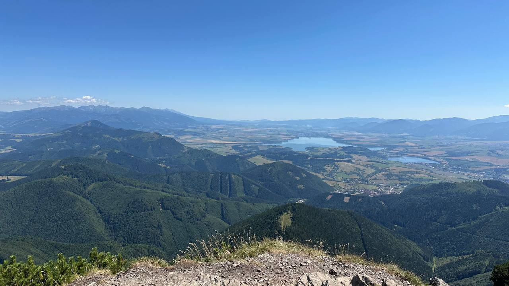

Veľký Choč
Výstup na Veľký Choč koncom leta — príjemných 15 stupňov na skale a panoramatický výhľad na Liptovskú Maru a Západné Tatry.
ZERO DEPENDENCIES
Go, Cloud Foundry, BOSH, and other software adventures — written slowly, since 2012.

Výstup na Veľký Choč koncom leta — príjemných 15 stupňov na skale a panoramatický výhľad na Liptovskú Maru a Západné Tatry.
MORE POSTS
2026.08.162 min
After test-driven, behaviour-driven and, in darker times, schedule-driven development, I distilled it all into one unified methodology.
2015.05.263 min
Hosting Go binaries on any Cloud Foundry installation — buildpacks, bootstrapping, and the parts the docs leave out.
2014.12.063 min
The last in the series of SockJS-go lessons learned, and why the third rewrite finally stuck.
2013.05.312 min
What a year of running the library taught me about goroutine lifetimes and the language itself.
2012.12.116 min
A WebSocket-like object for the browser, and what it takes to speak its protocol from a Go server.
2012.09.062 min
2012.06.284 min
Release engineering and lifecycle management for large distributed services, running on private vSphere infrastructure.